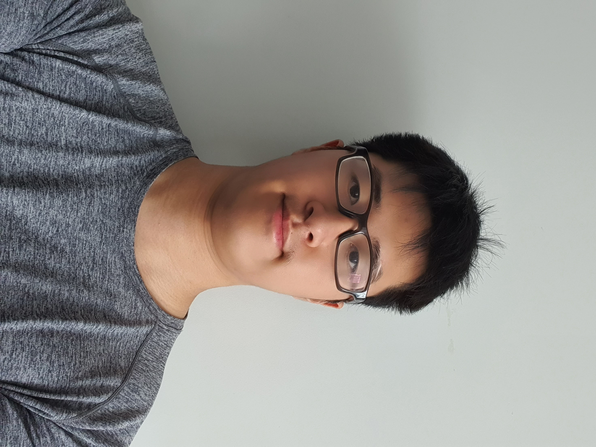
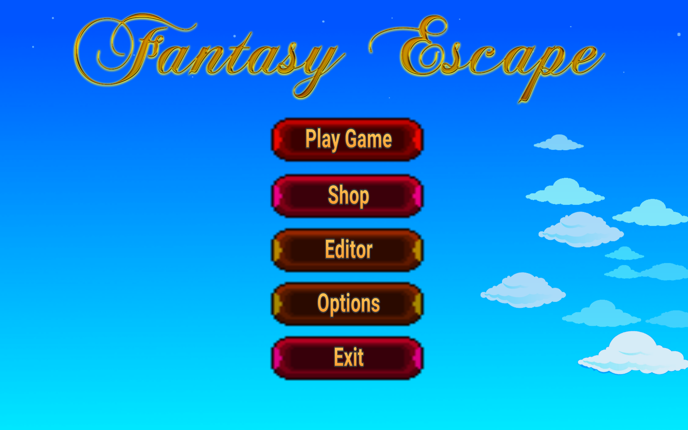
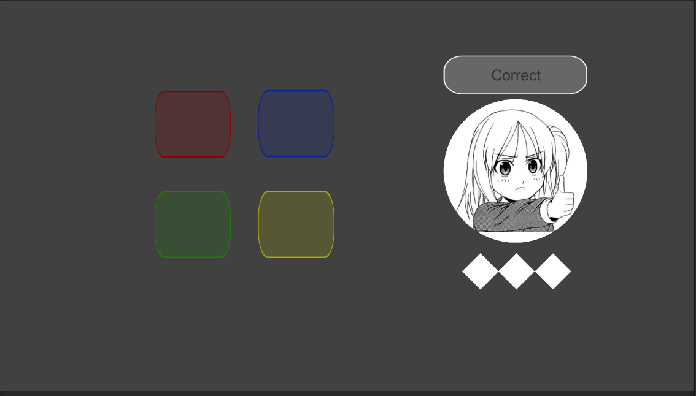
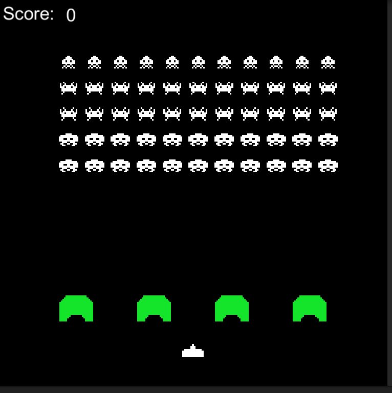
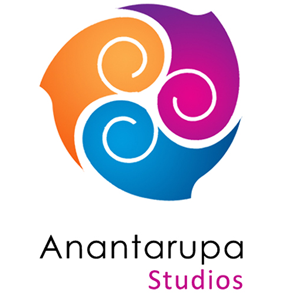
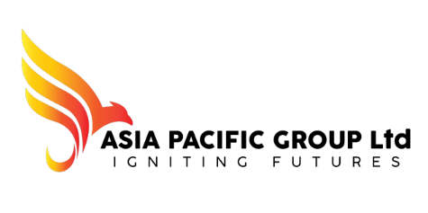

Jason Earvin
Software Developer
Welcome to my portfolio V2! (WIP)
About Myself
I graduated with my Bachelor of Computer and Information Sciences at AUT, and I am actively looking for a good job opportunity in Software Development.
I have a strong passion for programming and technologies. Currently, I am doing self-learning towards Javascript, C# and Unity.
I am someone who never gives up on difficult tasks and always wants to do things properly.
Education Background
Auckland University of Technology
July 2018 - November 2021
Degree: Bachelor Computer Information and Sciences
Major: Software Development
📜 Projects
Train Booking Application
Language: Core Java
Duration: 12 weeks (Feb 2020 - May 2020)
Details: This is a solo project where I developed a booking seat application.
The users have to log in or create a new account in order to make a booking of a seat in the
train system. I used Netbeans as the open source for this project.
Fantasy Escape

Language: C# and Unity
Duration: 12 weeks (Jul 2020 - Nov 2020)
Details: This is a group project with a team of five, where we developed a game software
with Unity and
C#. The users have options to play, change skins, adjust settings or quit the app. The users
will launch the tutorial world to understand how to play the game. We used Github to combine our
work into one project folder. This is a good opportunity for me to learn more about Github.
Awhina

Language: Javascript (React Native)
Duration: 27 weeks (Feb 2021 - Nov 2021)
Details: This is a group project of 5 members, working with a corporate healthcare client to
create a 'help and need' app for people that require resources from the community. The app is on
both IOS and Android platforms.
Personal Unity Projects
Pong

Memory Sequence 
Endless Runner

Space Invaders 
Work History
Anantarupa Studios

Key responsibilities:
• Improved functional code with C#
• Better understanding of using Unity game engine
• Managed Fork and Gitlab resources and functions
• Helped update the team’s current game with quality-of-life coding
• Had proper communications with Assistant and HRD
ENLIST (Asia Pacific Group)

Key responsibilities:
• Managed CSS templates
• Improved usability for users
• Ensured proper communication and connection to Backend developers
• Improved GitHub resources and functions
Bali United

Key responsibilities:
• Improved functional code with JavaScript and TypeScript
• Using Trello to track the tasks of the website
• Improved GitHub and Docker resources and functions
• Understanding teamwork in a remote work